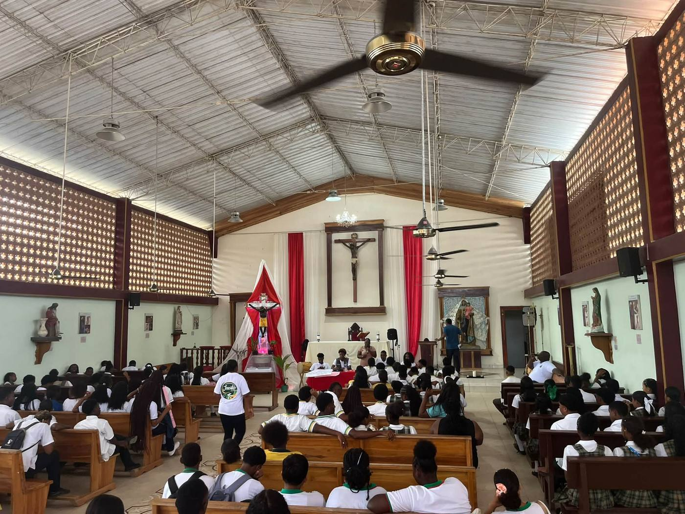
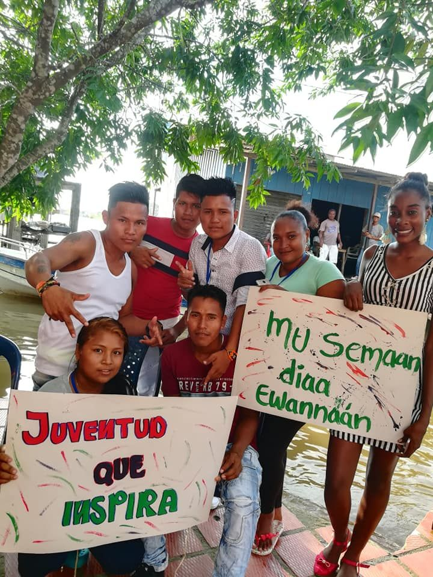
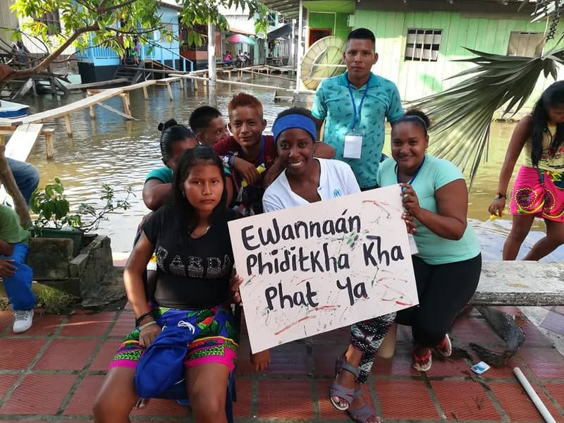
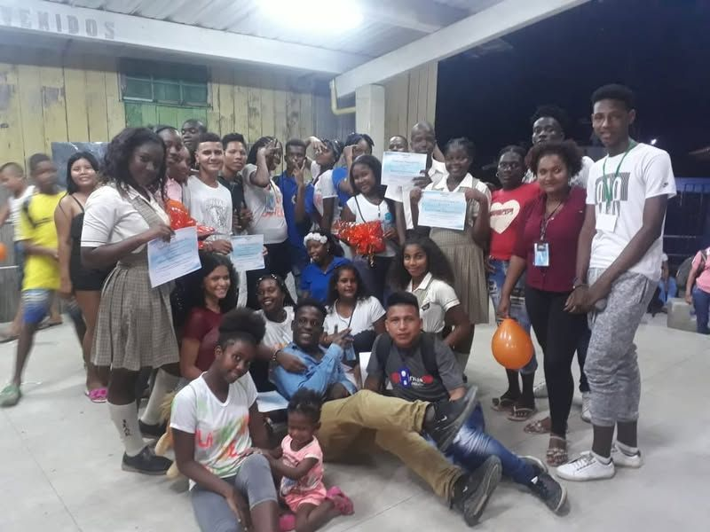
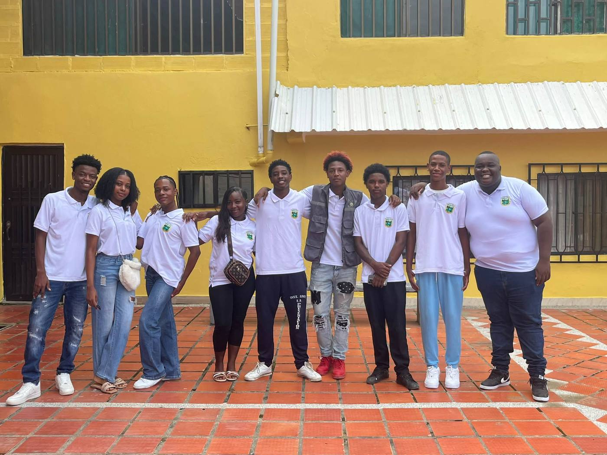

Juventud: conoce tus derechos y cómo participar
Todo lo que necesitas saber sobre la Plataforma de Juventud, el Sistema Municipal de Juventud, la Política Pública de Riosucio y la Semana de la Juventud.
¿Qué es una Plataforma de Juventud?
Las plataformas juveniles son espacios de convergencia y encuentro de organizaciones, procesos y experiencias colectivas de participación social, política y cultural de los y las jóvenes.
“Son escenarios de encuentro, articulación, coordinación e interlocución de las juventudes, de carácter autónomo. Por cada ente territorial deberá existir una plataforma.”— Ley 1885 de 2018, artículo 15
En Riosucio, la plataforma está conformada por colectivos, organizaciones y procesos juveniles del casco urbano y la ruralidad, y está registrada ante la Personería Municipal. Desde 2026 cuenta además con personería jurídica propia: la Asociación Juvenil Plataforma Municipal de Juventud de Riosucio (AJPMJR).
Funciones de la plataforma
Ley 1885 de 2018, artículo 17
- Impulsar la conformación de procesos, prácticas organizativas y espacios de participación juvenil.
- Participar en el diseño y desarrollo de las agendas municipales, departamentales y nacionales de juventud.
- Ejercer veeduría y control social a los planes de desarrollo, a las políticas públicas de juventud y a los programas para jóvenes.
- Establecer su reglamento interno y su propio plan de acción.
- Designar dos delegados ante la Comisión de Concertación y Decisión, como veedores con voz y sin voto.
- Actuar como interlocutora ante la administración, las entidades públicas y las organizaciones privadas en temas de juventud.
- Proponer a las autoridades políticas, planes, programas y proyectos para el cumplimiento de la ley.
Paso a paso: conformación y registro
Ruta propuesta por Colombia Joven para conformar, registrar y actualizar las plataformas municipales con el acompañamiento de las Personerías.
La entidad de juventud identifica y caracteriza los procesos, prácticas organizativas y espacios de participación juvenil del municipio.
Se convoca por radio, carteles, redes y comunicados a todas las organizaciones y procesos juveniles, con fecha, hora, lugar y requisitos.
Los delegados de las organizaciones eligen un cuerpo de representación temporal y un comité de veeduría, elaboran un plan de trabajo y firman el acta.
Se radica ante la Personería el acta de conformación o actualización y la caracterización de las organizaciones.
El Personero verifica la documentación y expide el registro de la plataforma (Ley 1622 de 2013, art. 60).
Las nuevas organizaciones se caracterizan e inscriben, y la información se actualiza ante la Personería.
La plataforma se reúne, construye la agenda de juventud y hace seguimiento a los compromisos del gobierno municipal.
La Plataforma Municipal se reúne como mínimo una vez al mes de manera ordinaria. La Plataforma Departamental, como mínimo dos veces al año, y la Nacional, dos veces al año.
Las instancias que trabajan por la juventud
El Estatuto de Ciudadanía Juvenil organiza la participación y la gestión pública de juventud en un sistema con varias piezas que deben trabajar juntas.
Plataforma Municipal de Juventud
Reúne a las organizaciones y procesos juveniles. Es autónoma, hace control social y construye la agenda juvenil.
Consejo Municipal de Juventud (CMJ)
Instancia de representación elegida por voto popular. Concerta con la Alcaldía la inclusión de las propuestas juveniles.
Asamblea Municipal de Juventud
Máximo espacio de consulta del movimiento juvenil, abierto a todos los jóvenes del municipio.
Comisión de Concertación y Decisión
Allí el gobierno municipal y las juventudes concertan la agenda y los compromisos. La Plataforma tiene dos delegados veedores, con voz y sin voto. En Riosucio se instaló el 10 de noviembre de 2026.
Ver los acuerdos →Instituto de Cultura, Turismo y Juventud
Entidad municipal encargada de dirigir y coordinar las políticas, planes y programas del Sistema Municipal de Juventud.
Saber más →Personería Municipal
Registra a la plataforma y hace seguimiento al cumplimiento de las agendas de las juventudes.
¿Cómo está organizada la juventud en Riosucio?
Del despacho del alcalde a los espacios de los jóvenes: quién hace qué en el Sistema Municipal de Juventud.
Organigrama de referencia elaborado por la plataforma con base en la Ley 1622 de 2013, la Ley 1885 de 2018 y el Acuerdo 002 de 2023. Los nombres corresponden a quienes ocupan los cargos en noviembre de 2026.
Política Pública de Juventud de Riosucio 2020–2030
Adoptada por el Concejo Municipal mediante el Acuerdo 012 del 24 de junio de 2020. Es la carta de navegación de la juventud riosuceña durante una década.
Una política construida por los jóvenes
Es el resultado de un ejercicio colectivo que empezó en 2014 en la Escuela Interétnica de Liderazgo Juvenil del Bajo Atrato, impulsada por los consejos comunitarios, los cabildos indígenas y organizaciones del territorio, con el acompañamiento de ACNUR y la Pastoral Social. Congregó a más de 200 jóvenes representantes de comunidades y organizaciones.
Objetivo general
Garantizar el goce efectivo de derechos de los y las jóvenes de Riosucio mediante la articulación de las acciones institucionales, sectoriales y comunitarias, incluyendo una estrategia de fortalecimiento de capacidades juveniles para la movilidad social.
Objetivos específicos
- Brindar orientaciones para la articulación intersectorial que garanticen la inversión en juventud.
- Promover el diálogo y la coordinación sociocomunitaria para facilitar transiciones dignas en los entornos familiares, educativos y laborales.
- Fortalecer las capacidades de los jóvenes para una participación efectiva en lo social, político, cultural y económico.
La plataforma hace seguimiento a la implementación de esta política. Si quieres sumarte a la veeduría, escríbenos.
Una semana para la juventud riosuceña
El Acuerdo 014 del 22 de noviembre de 2018 del Concejo Municipal establece la Semana de la Juventud en Riosucio durante la segunda semana de agosto de cada año, como lo indica el artículo 77 de la Ley 1622 de 2013.
¿Qué dice el acuerdo?
- Mesas programáticas para socializar la Ley 1622 de 2013 y construir propuestas que alimenten las políticas públicas de juventud.
- Actividades artísticas, culturales y deportivas, ferias de emprendimiento, conciertos y espacios de reflexión académica en colegios, barrios, corregimientos, parques y bibliotecas.
- Reconocimientos a jóvenes destacados por su aporte social, científico, artístico, deportivo, cultural o productivo.
- Comité interadministrativo para coordinarla: Alcaldía, secretarías, Concejo, Casa de la Cultura, Casa de la Juventud, organizaciones juveniles, colegios, universidades y grupos artísticos.
Así la hemos vivido




Instituto de Cultura, Turismo y Juventud
Creado por el Acuerdo 002 del 14 de febrero de 2023 del Concejo Municipal como establecimiento público con autonomía administrativa, personería jurídica y patrimonio propio.
Sus funciones en juventud
- Coordinar con las entidades nacionales, departamentales y municipales la implementación de la política pública de juventud.
- Dirigir las políticas, planes, programas y proyectos del Sistema Municipal de Juventud y hacer seguimiento a la gestión institucional.
- Implementar políticas de atención y oportunidades para la juventud.
- Coordinar modelos participativos de desarrollo de liderazgo juvenil con instituciones públicas, privadas y comunitarias.
- Promover grupos de interés cultural y turístico dirigidos a jóvenes, y consolidar la Casa de la Cultura y la Biblioteca como casa de la juventud.
¿Por qué es importante?
Es el aliado institucional de la plataforma: convoca, facilita espacios y herramientas, y responde por la ejecución de los compromisos con la juventud. La plataforma, por su parte, ejerce control social sobre esa gestión.
Resolvemos tus dudas
¿Quiénes son jóvenes según la ley?
Toda persona entre 14 y 28 años cumplidos que está consolidando su autonomía intelectual, física, moral, económica, social y cultural, y que ejerce su ciudadanía (Ley 1622 de 2013).
¿Qué es la Plataforma Municipal de Juventud?
Es un escenario autónomo de encuentro, articulación, coordinación e interlocución de las juventudes. Por cada municipio debe existir una plataforma, conformada por procesos y prácticas organizativas y espacios de participación juvenil (Ley 1885 de 2018, art. 15).
¿Cada cuánto se reúne la plataforma?
La Plataforma Municipal debe reunirse como mínimo una vez al mes de manera ordinaria, y de forma extraordinaria según su reglamento interno.
¿Quién registra a la plataforma?
La Personería Municipal. Recibe el acta de conformación o actualización, verifica los documentos, expide el registro y acompaña el cumplimiento de las agendas de las juventudes.
¿Qué diferencia hay entre la Plataforma y el Consejo Municipal de Juventud?
El Consejo Municipal de Juventud (CMJ) se elige por voto popular y es la instancia de representación. La Plataforma reúne a las organizaciones, procesos y espacios juveniles; es autónoma y hace control social. Las dos hacen parte del Subsistema de Participación de las Juventudes.
¿Qué es la Comisión de Concertación y Decisión?
Es el espacio donde el gobierno municipal y las juventudes concertan la agenda de juventud y definen compromisos. La Plataforma designa dos delegados que actúan como veedores, con voz y sin voto.
¿Necesito pertenecer a una organización para participar?
No. Los espacios de participación pueden incluir jóvenes no organizados. Puedes acercarte a la plataforma, participar en las asambleas y sumarte a una de nuestras líneas de trabajo.
¿Cuándo es la Semana de la Juventud en Riosucio?
Por el Acuerdo 014 de 2018 del Concejo Municipal, se celebra durante la segunda semana de agosto de cada año, en concordancia con el artículo 77 de la Ley 1622 de 2013.
Normas y documentos para descargar
Documentos públicos sobre juventud en Riosucio. Encuentra también nuestras resoluciones y actas en Transparencia.